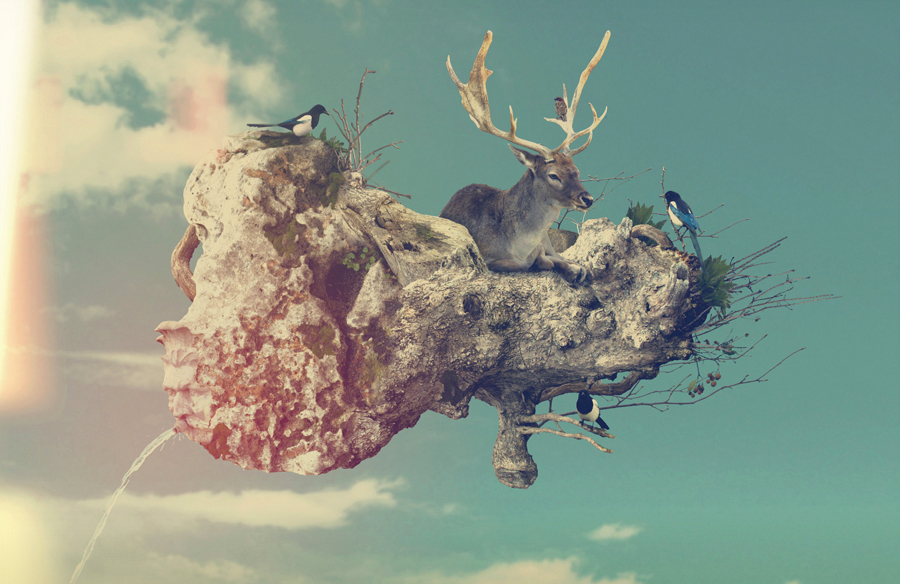
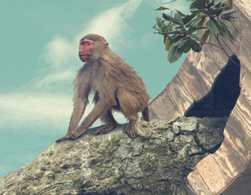
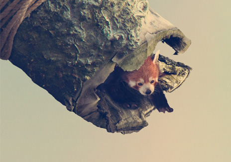
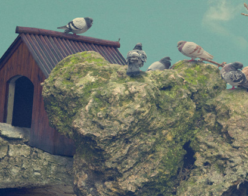

Zooo by Rafa Zubiría
Mixing photography and imagination Spanish photographer Rafa Zubiría created Zooo as a series of surreal floating animal habitats. This collection seems to be a continuation of his No Way Home series of floating buildings, homes and structures.
Found on The Fox is Black